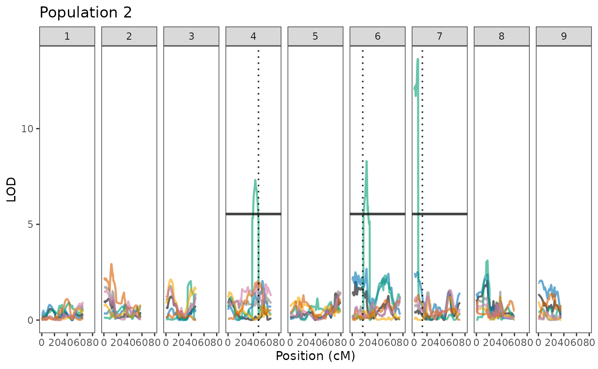

Intro
This vignette demonstrates how to prepare a QTL trace plot in a
reproducible way and publication ready. The steps include loading data,
extracting physical or genetic positions, identifying significant
thresholds, and visualizing results with geneticMapR
functions based on ggplot2 and ggpubr.
library(geneticMapR)
library(ggplot2)
library(dplyr)
#>
#> Attaching package: 'dplyr'
#> The following objects are masked from 'package:stats':
#>
#> filter, lag
#> The following objects are masked from 'package:base':
#>
#> intersect, setdiff, setequal, union
library(tidyr)
library(cowplot)
library(ggpubr)
#>
#> Attaching package: 'ggpubr'
#> The following object is masked from 'package:cowplot':
#>
#> get_legendSetup
Using names(M2$pheno)[-8] dynamically selects all phenotype variables except the ID (8th column).
Helper functions
combine_qtl <- function(results, trait_names) {
do.call(rbind, lapply(names(results), function(i) {
df <- results[[i]]
df$response_var <- trait_names[match(i, names(results))]
df
}))
}
add_physical_pos <- function(df) {
marker.name <- rownames(df)
split_marker <- strsplit(marker.name, "[_.]")
df$phys.pos <- as.numeric(sapply(split_marker, `[`, 2)) / 1e6
df
}
get_thresholds <- function(qtl_df, perm_df, trait) {
sig_thresh <- perm_df["5%", 1]
qtl_df %>%
filter(lod >= sig_thresh) %>%
distinct(chr) %>%
mutate(hline = sig_thresh, response_var = trait)
}Trait Colors
trait_colors <- c(
tip_angle_top = "#d55e00",
width_50 = "#cc79a7",
length = "#0072b2",
shoulder_top = "#f7a600",
length_width_ratio = "#009e73",
biomass = "black"
)Known QTLs (Vertical Lines)
vline_df2 <- data.frame(chr = unique(pop2$chr),
vline = c(NA, NA, NA, 48, NA, 16.6, 12.75, NA, NA))
pop2_plot <- ggplot(pop2, aes(x = pos, y = lod, color = response_var)) +
geom_line(linewidth = 0.85, alpha = 0.6) +
geom_hline(data = thresholds_df2, aes(yintercept = hline, group = response_var),
size = 1.05, alpha = 0.75) +
geom_vline(data = vline_df2, aes(xintercept = vline),
linetype = "dotted", color = "black", alpha = 0.85, size = 0.63) +
facet_wrap(~chr, nrow = 1) +
theme_test() +
theme(legend.position = "none") +
scale_color_manual(values = trait_colors) +
labs(x = "Position (cM)", y = "LOD", color = "Trait") +
scale_x_continuous(limits = c(0, 80)) +
ggtitle("Population 2")
#> Warning: Using `size` aesthetic for lines was deprecated in ggplot2 3.4.0.
#> ℹ Please use `linewidth` instead.
#> This warning is displayed once every 8 hours.
#> Call `lifecycle::last_lifecycle_warnings()` to see where this warning was
#> generated.
pop2_plot
#> Warning: Removed 6 rows containing missing values or values outside the scale range
#> (`geom_vline()`).